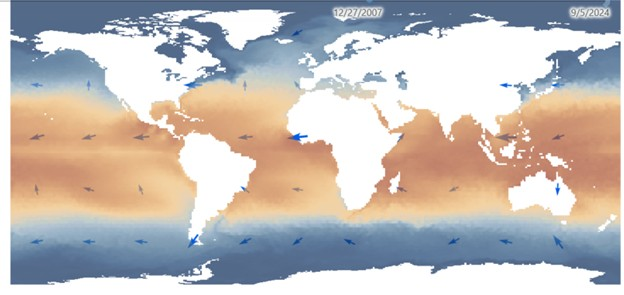
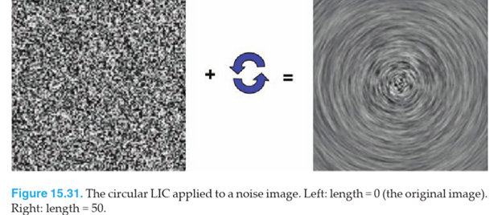
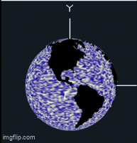
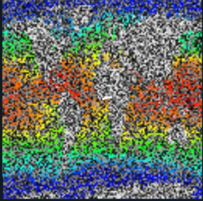
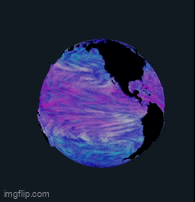

Ocean Visualization with Shader
This project visualizes ocean flow and temperature by projecting oceanographic data onto a texture and applying a 2D Line Integral Convolution (LIC) technique to acquire the flow visualization.
Implementation
1. Prepare ocean data with ArcGIS
ArcGIS Pro is a desktop application from Esri that provides exclusive access to Esri’s portal where millions of geographical databases are hosted and geoprocessing tools to extract and manipulate the data. Here, I use two raster layers: Ocean Surface Currents and Global Sea Surface Temperature, then apply geoprocessing tools to combine these two layers into data that can be read into the shader pipeline.
2. Project Raster to Point
Think of a raster like a giant grid — it’s made up of cells organized neatly into rows and columns. Each cell holds a value, like temperature or current speed, and different raster layers can have completely different sizes, resolutions, and units. Here, the temperature layer has a raster cell of size 27820m with 1441 rows and 2174 columns where the ocean surface current has cell sizes of 1 deg with 360 rows and 158 columns. Since the two layers don't share the same size, the Temperature layer need to be projected onto the Currents layer. The resulting layer has dimensions of 360 x 178.
Next, I used Raster to Point and Extract MultiValue to Point to transform the raster cells into a list of points where each point holds value from both layers: current direction and magnitude as well as temperature. Each point also has x coordinate (ranging from -180, 180) and y coordinate (ranging from -90, 90).

3. Encode Texture Information
Each point’s longitude and latitude are converted into texture coordinates allowing texture mapping to pixels. I use trigonometric calculations to calculate the x and y component of the flow vectors from the direction angle. Then, the data is written to the raw texture file format where each texel store X, Y, magnitude, and temperature in its RGBA values.
4. Apply 2D Line Integral Convolution (LIC) in Shader
Line Integral Convolution is a visualization technique to show flow directions across a 2D field. The shader takes two texture – the background image to be smeared and the flow field texture where each point stores the direction of the flow.



The temperature-encoded noise texture and the flow texture are both passed into the shader pipeline. For each fragment, the shader displaces the current texture coordinate based on the flow vector in both the x and y directions. The color of the displaced texture coordinate is then sampled and applied to the current fragment.
Final Result
